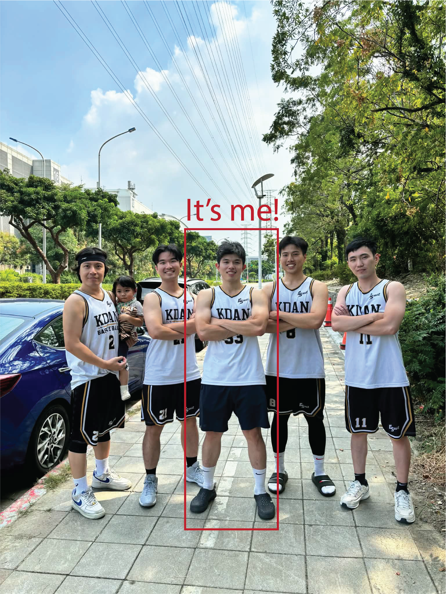

About Me

Hello, Professor. My name is Ling-Lian, but you can also call me Baron. I am from Taiwan and just arrived in Canada on December 23rd, 2025. Previously, I worked as a Product Designer, focusing on feature optimization and new product development. I came to Canada to pursue my studies because I aim to transition into the gaming industry in the West and become an exceptional UX Designer.
I am a sports enthusiast, particularly when it comes to basketball. However, after starting my professional career, it became difficult to coordinate group games, so I began working out at the gym, which I have gradually come to love. Beyond physical activity, I am a passionate gamer who enjoys exploring a wide variety of genres. Currently, my favorite game is Baldur’s Gate 3, which I find deeply engaging and inspiring.
A motivational quote :
I can accept failure, everyone fails at something. But I can't accept not trying. -Michael Jordan
My Hobbies
- Basketball
- Bodybuilding